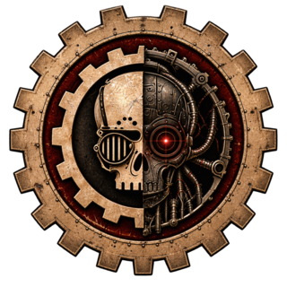
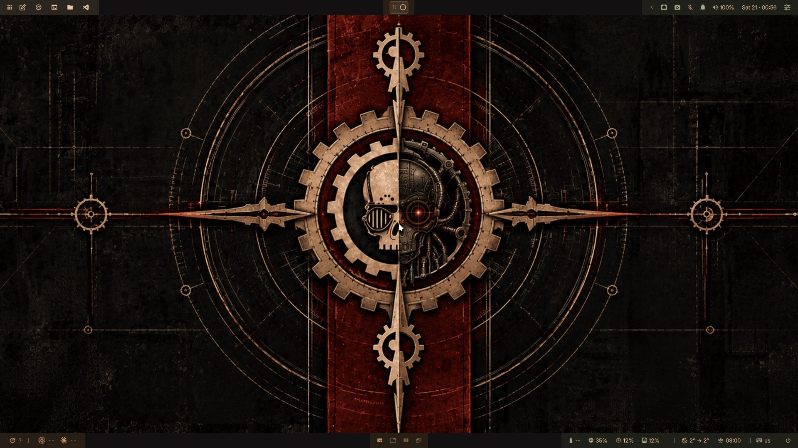
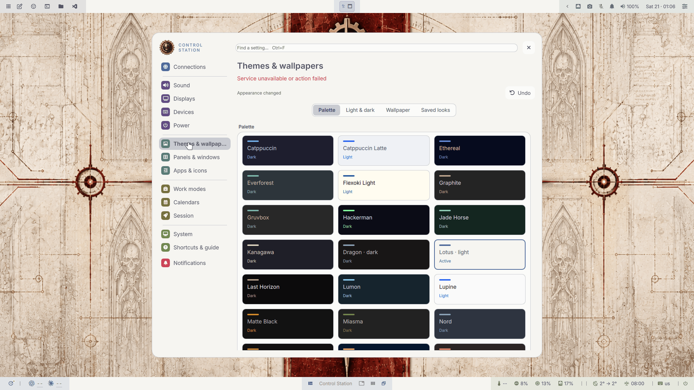
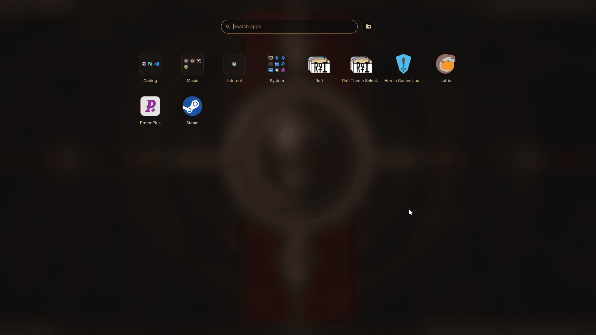
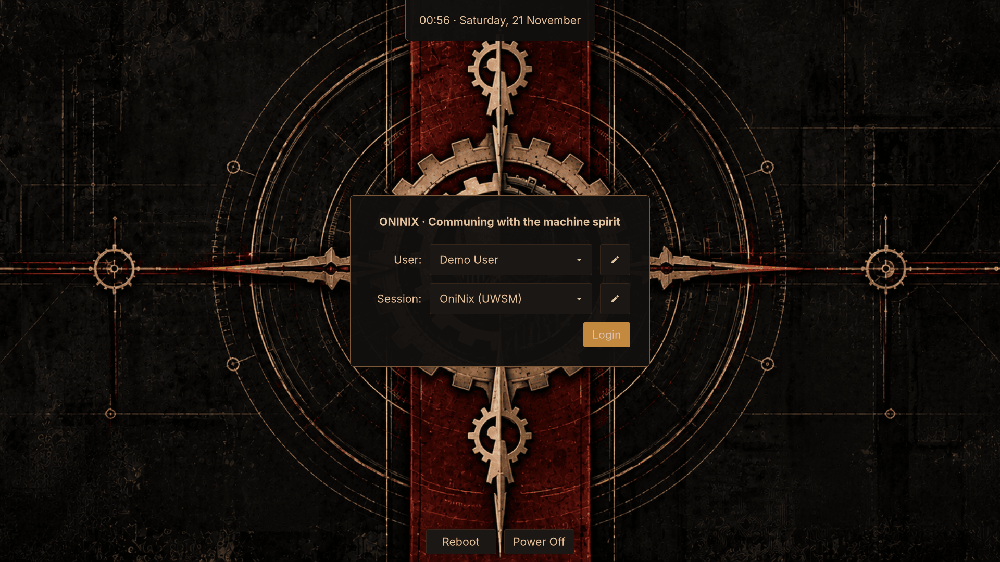
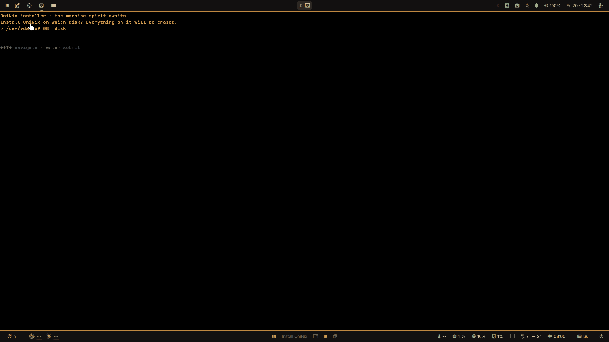
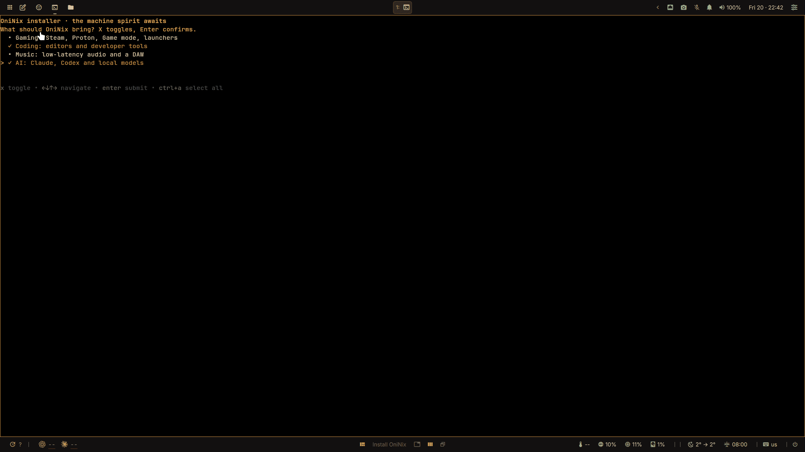
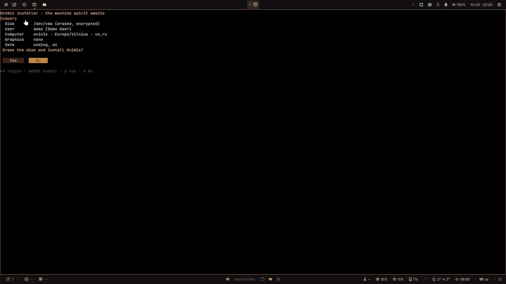
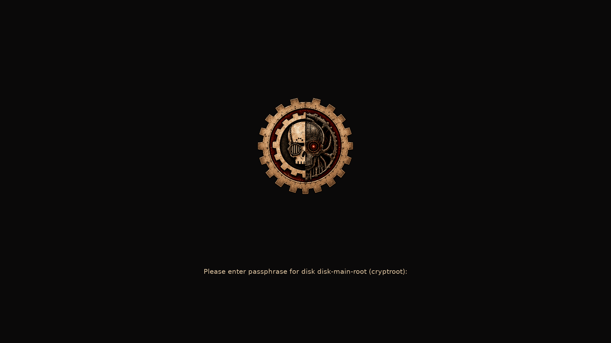
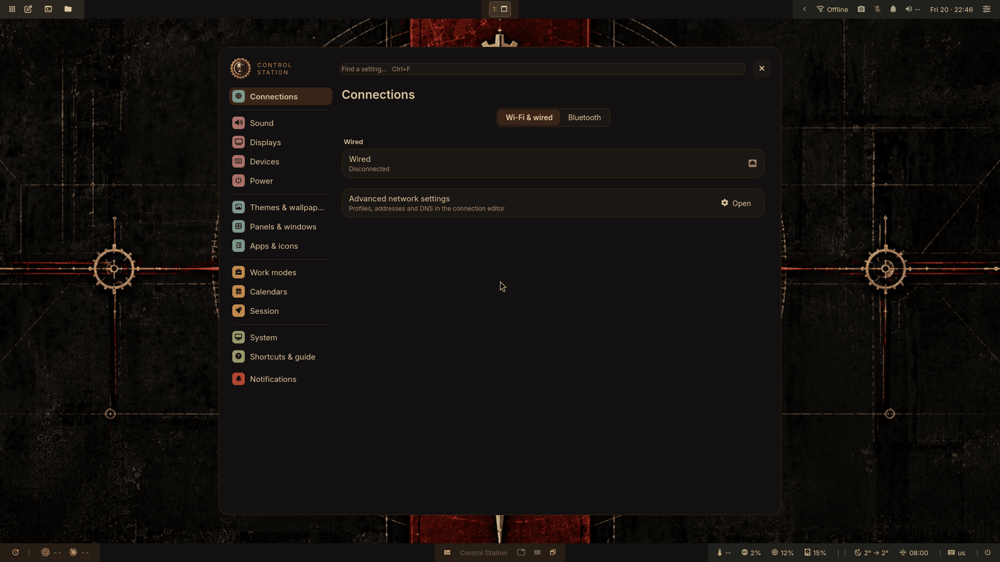

ONINIX
My Hyprland desktop on NixOS, with local dictation and a machine spirit that builds and previews the system changes you ask for.

Tell the machine spirit what you want
Press Super A, or hold Right Ctrl and say it. "Install Blender." "Turn on the gaming set." "Add the German layout."
It edits a copy
Claude Code or Codex proposes changes to a copy of settings.nix. Sign in first. The request and configuration can be sent to the agent provider.
It builds first
OniNix builds the new system from that copy. If it does not build, nothing changes.
You see the diff
The config change and the package list, before anything happens.
Apply or undo
Apply asks for sudo and activates the reviewed build. Undo restores the preceding settings and generation.

Read the diff before applying. A NixOS configuration can change anything an administrator can configure. Generation rollback restores system software and configuration. User data keeps its current contents.
Talk to it
Hold Right Alt in a focused text field, speak, then release to insert the transcription. Whisper runs locally after the model downloads. OniNix profiles the available compute backend and adjusts the model toward a latency target of about three seconds. In a VM without GPU acceleration, Control Station shows why dictation is off.

Why not just Omarchy
Omarchy inspired my desktop. I wanted it on NixOS, with generations and a way to review system changes.
| Omarchy | OniNix | |
|---|---|---|
| Base | Arch Linux | NixOS |
| Rollback | Btrfs snapshots in Limine | Retained NixOS generations in GRUB |
| Settings | Omarchy menu and dotfiles | Control Station and a Nix flake |
| Dictation | Superwhisper with a local model option | Local Whisper sized to your hardware |
| System changes | Omarchy tools and package manager | Build a proposal, review the diff, choose whether to apply |
What it looks like
A demo desktop, the UEFI installer and the Arch Linux layer.











What you get
Control Station
Connections, sound, displays, devices, power, themes, panels, apps, work modes, calendars, voice and the spirit. Searchable.
Gaming
Steam with GE-Proton, Game mode that pauses selected apps and services, and a gaming CPU scheduler profile.
Coding
VS Code, toolchains, Docker and nix-ld for compatible Linux binaries.
Music
Low-latency PipeWire and a DAW.
AI
Claude Code, Codex and local models through Ollama. Pick them as checkboxes in the installer.
Updates
Check the OniNix input and rebuild. GRUB can boot an earlier retained generation.
Install
Build the ISO with Nix on x86-64 Linux. Repository access is required.
git clone --branch oninix git@github.com:ilyakubryakov/omnissiah-desktop.git cd omnissiah-desktop nix --extra-experimental-features 'nix-command flakes' build .#iso
Write the ISO from result/iso/ to a USB stick as a disk image. Boot in UEFI mode with Secure Boot disabled, then choose Install OniNix. The installer needs a network connection and a target disk of at least 32 GB. Review your disk, optional encryption and package sets before confirming the erase.
I also run this desktop as a Nix layer on Ubuntu, Fedora and Arch. Run ./oninix-install from the checkout and choose OniNix at the login screen. Fedora requires the community Hyprland COPR. Layer setup